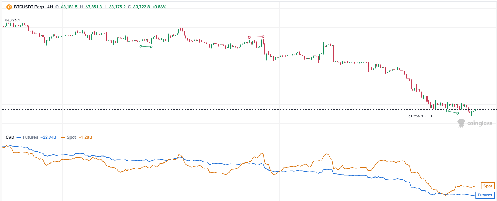
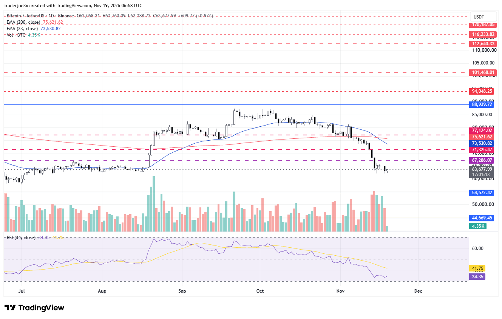
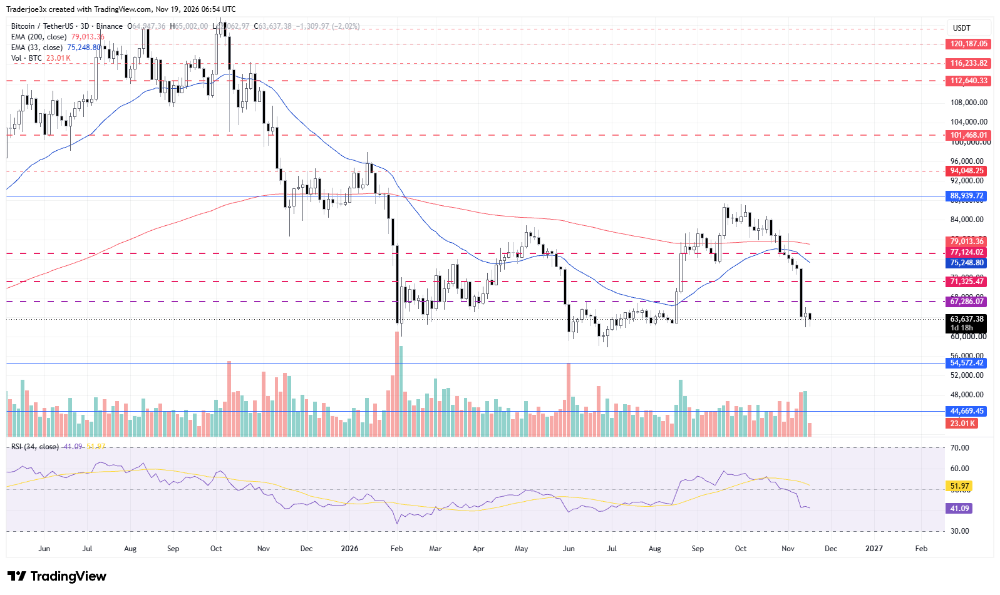

Sentiment & Phân tích
Cập nhật gần nhất: 19/11/2026
1. Tổng quan thị trường
Thị trường 2 tuần vừa qua chứng kiến một đợt correction mạnh hơn đa số mong đợi. Phần đông traders kỳ vọng bounce ở vùng 76–73k, nhưng tâm lý hiện tại khá bearish và thận trọng hơn. Open Interest đã giảm về vùng nền giá BTC tháng 8/2026.
2. Liquidation 24h gần nhất
Nhận định: Áp lực long bị buộc phải đóng vẫn còn, cho thấy phe mua vẫn đang bị ép trong nhịp điều chỉnh này. Số liệu thay đổi theo thời gian thực (tham khảo CoinGlass).
3. Social Sentiment (X)
Xu hướng chính
Thận trọng
Tâm lý chung
Risk-off
Key Observations
- Nhiều trader kỳ vọng bounce nhưng không dám vào mạnh vì đã bị “fake bounce” trước đó.
- Tâm lý risk-off vẫn còn rõ sau đợt điều chỉnh mạnh hơn kỳ vọng.
- Một số account lớn bắt đầu chú ý vùng hỗ trợ thấp hơn và chờ xác nhận từ CVD / volume.
4. Sự kiện quan trọng sắp tới
Có thể ảnh hưởng đến DXY và risk assets
Dữ liệu việc làm quan trọng – thường gây biến động mạnh
Lạm phát – tác động trực tiếp đến kỳ vọng lãi suất
5. Technical View
Nhìn từ khung 3D và 1D, đường giá hiện tại đang gap khá xa với 2 đường MA, RSI cũng gap lớn so với đường trung bình. Dự kiến giá BTC sẽ có sự hồi phục để lấp khoảng gap này.
Các mốc cần chú ý:
- Vùng 67.2k
- Vùng 74.4k — nếu break được có thể hướng tới 77k (khu vực POC volume lớn)
CVD của cả Spot và Futures đã có phản ứng tạo nền đáy và tăng trở lại → áp lực bán đã được hấp thụ tốt hơn.
Còn khoảng hơn 10 ngày nữa để đóng nến tháng. Quan sát nến tháng sẽ cho view dự báo tháng sau rõ ràng hơn.
Biểu đồ tham chiếu:



Nội dung được tổng hợp từ quan sát cá nhân + dữ liệu thị trường. Không phải lời khuyên đầu tư. Luôn quản lý rủi ro và tự chịu trách nhiệm với quyết định của mình.